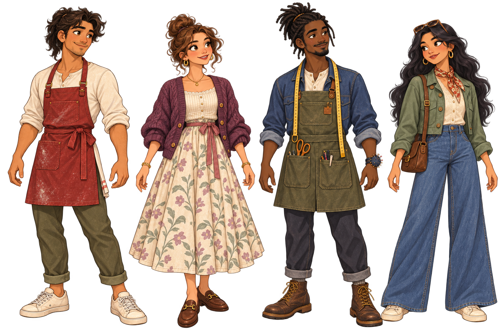
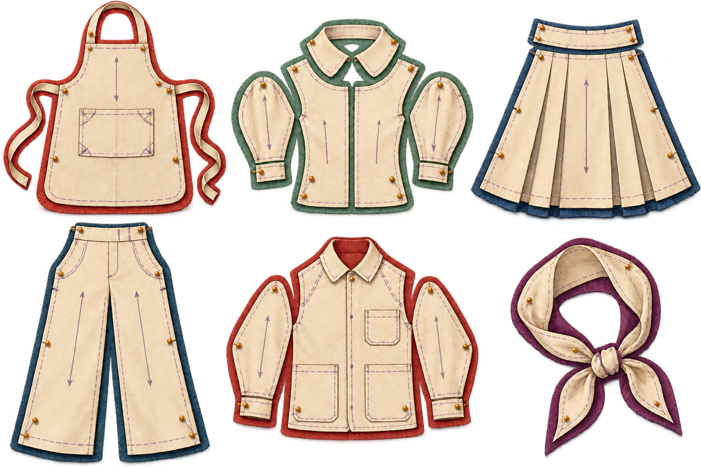

Body direction5 painted views mirrored into 8-way movement
FrontDirection swaps are discrete art; walk, idle, carry, wave, and talk animate its registered bones and secondary cloth.
The flat puppet look is retired from this review. These examples use the fashion game’s painted cloth, constructed seams, adult proportions, and warm feature-animation expression as the quality bar.

Painterly faces, mature anatomy, cloth texture, seams, hardware, pockets, drape, and wear all survive at character scale.
The painted sheets below are registered to fixed cells so the cutout rig can swap direction, clothing, and facial state without redrawing the whole character.
FrontDirection swaps are discrete art; walk, idle, carry, wave, and talk animate its registered bones and secondary cloth.
Counter ClassicHenley · service apron · work trouser · canvas sneaker
Neutral · center gazeBlink timing, eye aim, brow emotion, and mouth phonemes can layer over idle, walk, carry, or service actions.

Live source art · fashion pattern catalogThe avatar no longer treats clothes as a color choice. Every equipped item carries a cut family, fabric pattern, accent, construction finish, alteration geometry, and attachment map.
Top · bottom · apron/overlayer · left shoe · right shoe
Head · neck · chest · shoulder/bag · waist · hands
Collars · cuffs · lapels · straps · ties · pockets · pleats · hardware
Woven texture · print · topstitch · embroidery · binding · wear
Personal avatars select every recipe field directly. Procedural NPCs use deterministic seeds, weighted variety, and curated outfit rules. Loose hair, apron ties, skirts, scarves, and satchels receive secondary-motion bones, so replacing clothes never replaces the animation beneath them.